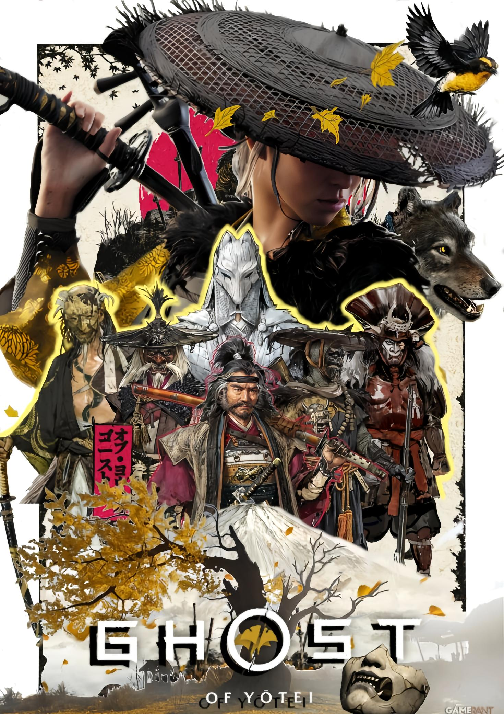
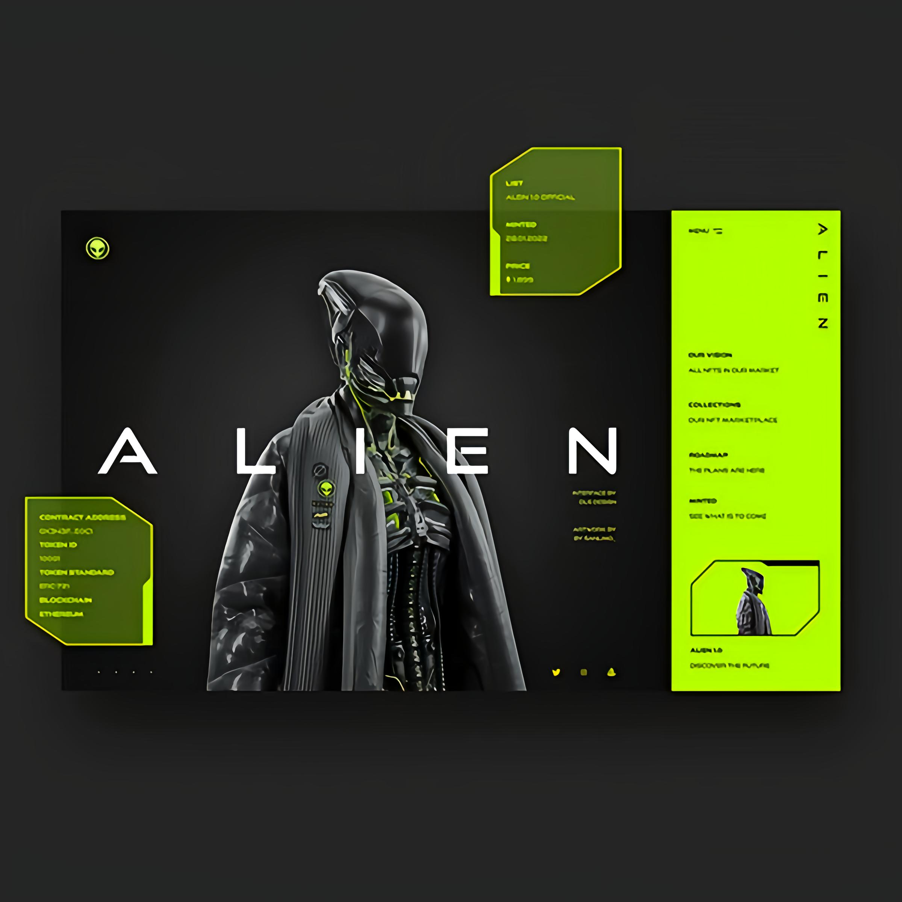
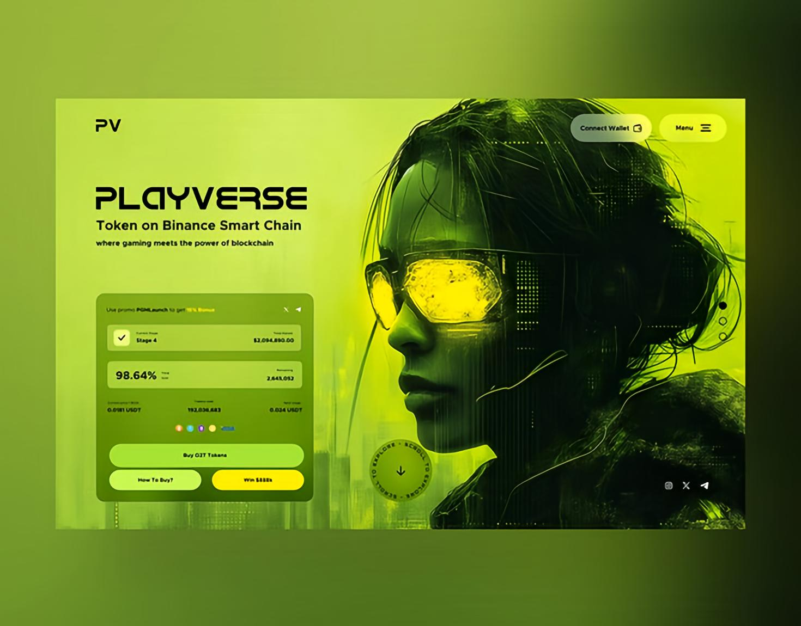
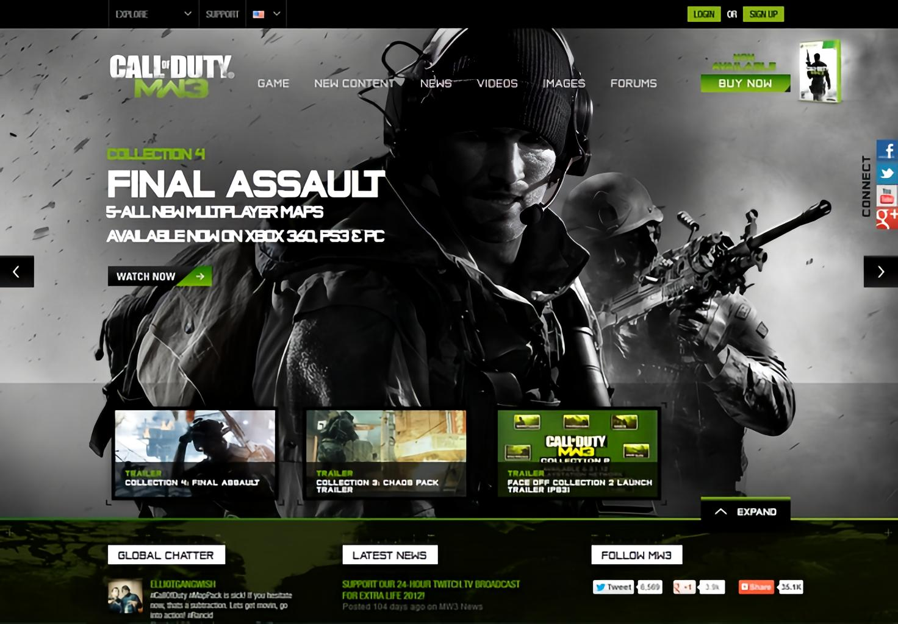
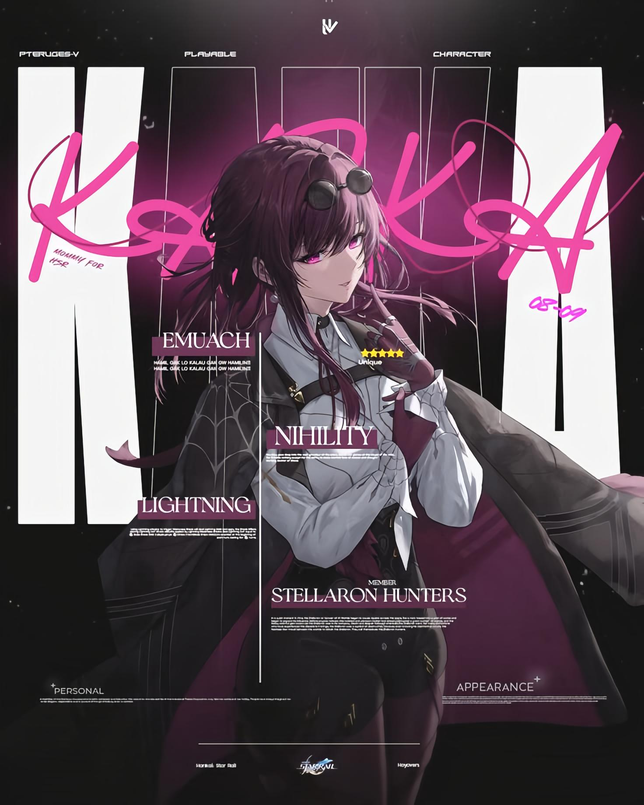
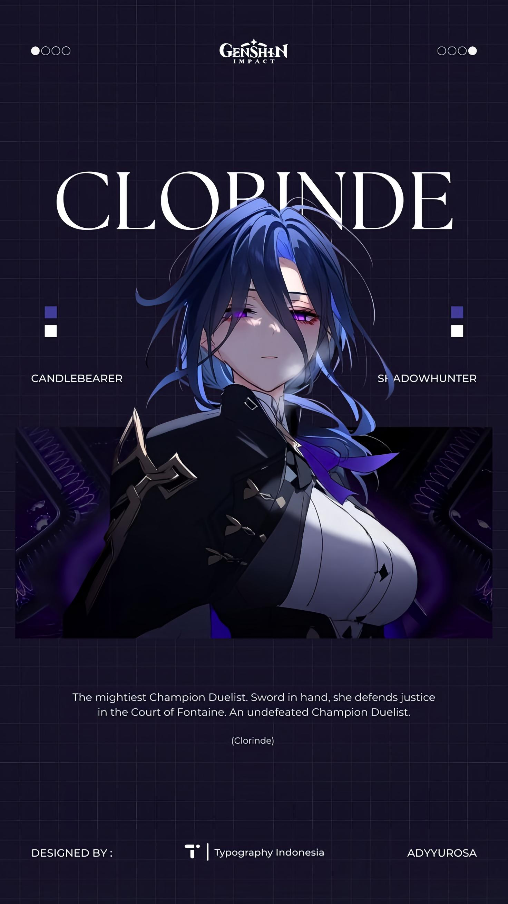
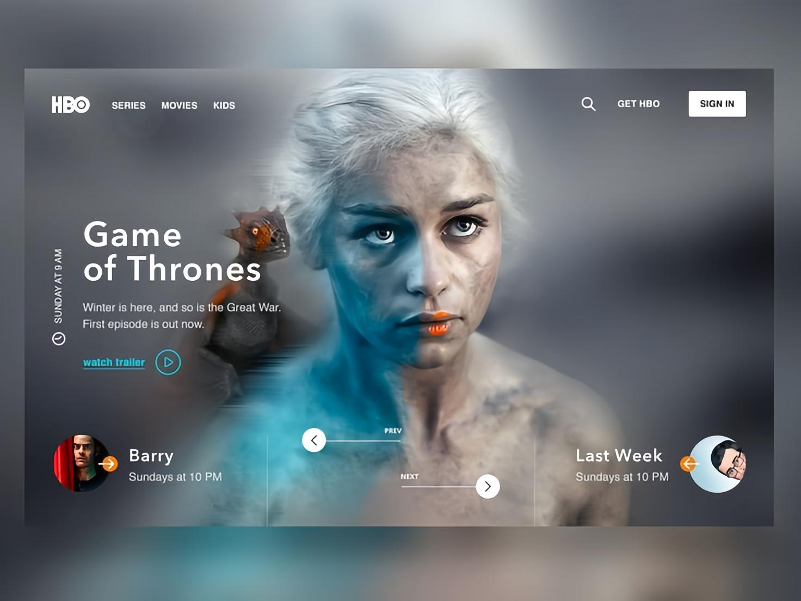
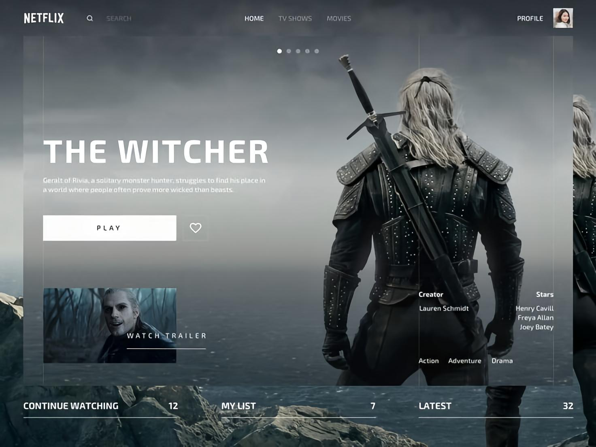

C.S. Meverlyne
J’ai effectué toutes mes années de primaire à l’école Mevelyne. Cette période a vraiment posé les bases de mon apprentissage et m’a donné le goût de la curiosité et du travail bien fait.
Étudiant en Licence 1 info à l'ULCO. Passionné par le développement web, je conçois des sites et applications web interactifs et fonctionnels avec HTML - CSS - JavaScript. Curieux et motivé, j'aime explorer de nouvelles technologies et apprendre en continu.
Curieux de nature, j’explore le monde du code comme un terrain de jeu. Chaque ligne est une opportunité de créer, d’apprendre et de repousser les limites. Mon objectif : transformer des idées en interfaces vivantes.
J’ai effectué toutes mes années de primaire à l’école Mevelyne. Cette période a vraiment posé les bases de mon apprentissage et m’a donné le goût de la curiosité et du travail bien fait.
J’ai commencé le collège à Saint Joseph/Elikya. Une nouvelle étape, avec un environnement plus structuré et de nouvelles matières qui m’ont poussé à m’organiser davantage.
J’ai poursuivi ma scolarité dans la même école, en consolidant mes connaissances et en prenant petit à petit confiance dans mon rythme de travail.
C’est à ce moment que j’ai commencé à m’intéresser de plus près aux matières scientifiques. Cette année a renforcé mon esprit d’analyse et mon envie de comprendre en profondeur.
Dernière année de collège, qui m’a permis de confirmer mon orientation et de préparer mon entrée au lycée avec plus de maturité et d’objectifs en tête.
En Seconde, j’ai découvert un rythme plus intense et plus exigeant. Cette année m’a aidé à affiner mes choix et à me diriger naturellement vers la filière scientifique.
J’ai terminé mes études secondaires en filière scientifique et obtenu mon baccalauréat. Une étape importante qui a confirmé mon intérêt pour les sciences et mon envie de poursuivre dans l’enseignement supérieur.
Je poursuis actuellement mes études à l’ULCO. C’est une nouvelle phase de mon parcours, pleine de découvertes et d’apprentissage, où je développe progressivement des compétences solides dans le domaine scientifique et informatique.
______________________________________________________________________________________________________________________________
Création d’un design web inspiré de l’esthétique japonaise et des récits de samouraïs. L’interface mêle tradition et modernité, avec une composition visuelle marquée par des contrastes forts, une palette rouge et noire, et des personnages emblématiques. Chaque élément est pensé pour renforcer l’identité visuelle du projet.

Développement d’un site web immersif autour de l’univers Ghost of Yotel. L’intégration front-end et back-end permet une navigation fluide, des animations dynamiques et une structure évolutive. Le code soutient une narration visuelle forte, avec des performances optimisées pour tous les supports.
Conception d’une interface utilisateur dans un univers sci-fi. Le design sombre et néon évoque une ambiance extraterrestre, avec une navigation intuitive et des éléments interactifs pensés pour capter l’attention. L’expérience utilisateur est centrée sur l’exploration et la découverte.
Design d’une interface immersive pour une plateforme de jeux vidéo. L’univers visuel s’inspire de l’esthétique cyberpunk, avec une navigation intuitive et des éléments interactifs pensés pour les passionnés de gaming. L’expérience utilisateur est centrée sur la découverte et la personnalisation.
Création d’un tableau de bord militaire pour un jeu de tir à la première personne. L’interface met en avant les missions, les statistiques et les profils de joueurs dans un environnement visuel intense et stratégique. L’objectif est de renforcer l’engagement et la lisibilité des données en situation de jeu.
Développement d’une interface inspirée des codes visuels de l’animation japonaise. Le design met en avant le personnage de Kafka dans une ambiance graphique dynamique et colorée. Navigation fluide, typographie expressive et hiérarchisation claire des contenus pour une expérience captivante.
Création d’un univers narratif autour d’un personnage fantasy. Clopinde incarne une duelliste légendaire, protectrice de la justice dans la Cour de Fontaine. Ce projet mêle typographie expressive, storytelling visuel et design de personnage pour une immersion forte dans un monde fictif.
Refonte d’une interface utilisateur pour une plateforme de streaming, centrée sur l’univers de Game of Thrones. Navigation simplifiée, profils personnalisés et mise en avant des contenus récents pour une expérience fluide et cinématographique.
Conception d’une interface intuitive pour la série The Witcher sur Netflix. L’accent est mis sur la continuité de visionnage, la personnalisation des listes et la valorisation des nouveautés, dans un univers sombre et épique fidèle à la série.
